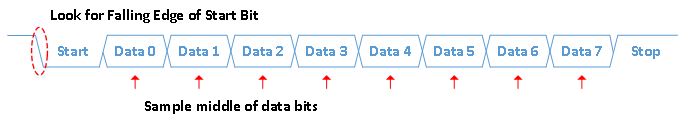

UART, Serial Port, RS-232 Interface
Code in both VHDL and Verilog for FPGA Implementation
Do you know how a UART works? If not, first brush up on the basics of UARTs before continuing on. Have you considered how you might sample data with an FPGA? Think about data coming into your FPGA. Data can arrive by itself or it can arrive with a clock. When it arrives with a clock, it is call synchronous. When it arrives without a clock, it is called asynchronous. A UART is an asynchronous interface.
In any asynchronous interface, the first thing you need to know is when in time you should sample (look at) the data. If you do not sample the data at the right time, you might see the wrong data. In order to receive your data correctly, the transmitter and receiver must agree on the baud rate. The baud rate is the rate at which the data is transmitted. For example, 9600 baud means 9600 bits per second. The code below uses a generic in VHDL or a parameter in Verilog to determine how many clock cycles there are in each bit. This is how the baud rate gets determined.
The FPGA is continuously sampling the line. Once it sees the line transition from high to low, it knows that a UART data word is coming. This first transition indicates the start bit. Once the beginning of the start bit is found, the FPGA waits for one half of a bit period. This ensures that the middle of the data bit gets sampled. From then on, the FPGA just needs to wait one bit period (as specified by the baud rate) and sample the rest of the data. The figure below shows how the UART receiver works inside of the FPGA. First a falling edge is detected on the serial data line. This represents the start bit. The FPGA then waits until the middle of the first data bit and samples the data. It does this for all eight data bits.
Inline Style: 
The above data stream shows how the code below is structured. The code below uses one Start Bit, one Stop Bit, eight Data Bits, and no parity. Note that the transmitter modules below both have a signal o_tx_active. This is used to infer a tri-state buffer for half-duplex communication. It is up your specific project requirements if you want to create a half-duplex UART or a full-duplex UART. The code below will work for both!
If you want to simulate your code (and you should) you need to use a testbench. Luckily there is a test bench already created for you! This testbench below exercises both the Transmitter and the Receiver code. It is programmed to work at 115200 baud. Note that this test bench is for simulation only and can not be synthesized into functional FPGA code.
VHDL Implementation
VHDL Receiver (UART_RX.vhd):
----------------------------------------------------------------------
-- File Downloaded from http://www.nandland.com
----------------------------------------------------------------------
-- This file contains the UART Receiver. This receiver is able to
-- receive 8 bits of serial data, one start bit, one stop bit,
-- and no parity bit. When receive is complete o_rx_dv will be
-- driven high for one clock cycle.
--
-- Set Generic g_CLKS_PER_BIT as follows:
-- g_CLKS_PER_BIT = (Frequency of i_Clk)/(Frequency of UART)
-- Example: 10 MHz Clock, 115200 baud UART
-- (10000000)/(115200) = 87
--
library ieee;
use ieee.std_logic_1164.ALL;
use ieee.numeric_std.all;
entity UART_RX is
generic (
g_CLKS_PER_BIT : integer := 115 -- Needs to be set correctly
);
port (
i_Clk : in std_logic;
i_RX_Serial : in std_logic;
o_RX_DV : out std_logic;
o_RX_Byte : out std_logic_vector(7 downto 0)
);
end UART_RX;
architecture rtl of UART_RX is
type t_SM_Main is (s_Idle, s_RX_Start_Bit, s_RX_Data_Bits,
s_RX_Stop_Bit, s_Cleanup);
signal r_SM_Main : t_SM_Main := s_Idle;
signal r_RX_Data_R : std_logic := '0';
signal r_RX_Data : std_logic := '0';
signal r_Clk_Count : integer range 0 to g_CLKS_PER_BIT-1 := 0;
signal r_Bit_Index : integer range 0 to 7 := 0; -- 8 Bits Total
signal r_RX_Byte : std_logic_vector(7 downto 0) := (others => '0');
signal r_RX_DV : std_logic := '0';
begin
-- Purpose: Double-register the incoming data.
-- This allows it to be used in the UART RX Clock Domain.
-- (It removes problems caused by metastabiliy)
p_SAMPLE : process (i_Clk)
begin
if rising_edge(i_Clk) then
r_RX_Data_R <= i_RX_Serial;
r_RX_Data <= r_RX_Data_R;
end if;
end process p_SAMPLE;
-- Purpose: Control RX state machine
p_UART_RX : process (i_Clk)
begin
if rising_edge(i_Clk) then
case r_SM_Main is
when s_Idle =>
r_RX_DV <= '0';
r_Clk_Count <= 0;
r_Bit_Index <= 0;
if r_RX_Data = '0' then -- Start bit detected
r_SM_Main <= s_RX_Start_Bit;
else
r_SM_Main <= s_Idle;
end if;
-- Check middle of start bit to make sure it's still low
when s_RX_Start_Bit =>
if r_Clk_Count = (g_CLKS_PER_BIT-1)/2 then
if r_RX_Data = '0' then
r_Clk_Count <= 0; -- reset counter since we found the middle
r_SM_Main <= s_RX_Data_Bits;
else
r_SM_Main <= s_Idle;
end if;
else
r_Clk_Count <= r_Clk_Count + 1;
r_SM_Main <= s_RX_Start_Bit;
end if;
-- Wait g_CLKS_PER_BIT-1 clock cycles to sample serial data
when s_RX_Data_Bits =>
if r_Clk_Count < g_CLKS_PER_BIT-1 then
r_Clk_Count <= r_Clk_Count + 1;
r_SM_Main <= s_RX_Data_Bits;
else
r_Clk_Count <= 0;
r_RX_Byte(r_Bit_Index) <= r_RX_Data;
-- Check if we have sent out all bits
if r_Bit_Index < 7 then
r_Bit_Index <= r_Bit_Index + 1;
r_SM_Main <= s_RX_Data_Bits;
else
r_Bit_Index <= 0;
r_SM_Main <= s_RX_Stop_Bit;
end if;
end if;
-- Receive Stop bit. Stop bit = 1
when s_RX_Stop_Bit =>
-- Wait g_CLKS_PER_BIT-1 clock cycles for Stop bit to finish
if r_Clk_Count < g_CLKS_PER_BIT-1 then
r_Clk_Count <= r_Clk_Count + 1;
r_SM_Main <= s_RX_Stop_Bit;
else
r_RX_DV <= '1';
r_Clk_Count <= 0;
r_SM_Main <= s_Cleanup;
end if;
-- Stay here 1 clock
when s_Cleanup =>
r_SM_Main <= s_Idle;
r_RX_DV <= '0';
when others =>
r_SM_Main <= s_Idle;
end case;
end if;
end process p_UART_RX;
o_RX_DV <= r_RX_DV;
o_RX_Byte <= r_RX_Byte;
end rtl;
VHDL Transmitter (UART_TX.vhd)
----------------------------------------------------------------------
-- File Downloaded from http://www.nandland.com
----------------------------------------------------------------------
-- This file contains the UART Transmitter. This transmitter is able
-- to transmit 8 bits of serial data, one start bit, one stop bit,
-- and no parity bit. When transmit is complete o_TX_Done will be
-- driven high for one clock cycle.
--
-- Set Generic g_CLKS_PER_BIT as follows:
-- g_CLKS_PER_BIT = (Frequency of i_Clk)/(Frequency of UART)
-- Example: 10 MHz Clock, 115200 baud UART
-- (10000000)/(115200) = 87
--
library ieee;
use ieee.std_logic_1164.all;
use ieee.numeric_std.all;
entity UART_TX is
generic (
g_CLKS_PER_BIT : integer := 115 -- Needs to be set correctly
);
port (
i_Clk : in std_logic;
i_TX_DV : in std_logic;
i_TX_Byte : in std_logic_vector(7 downto 0);
o_TX_Active : out std_logic;
o_TX_Serial : out std_logic;
o_TX_Done : out std_logic
);
end UART_TX;
architecture RTL of UART_TX is
type t_SM_Main is (s_Idle, s_TX_Start_Bit, s_TX_Data_Bits,
s_TX_Stop_Bit, s_Cleanup);
signal r_SM_Main : t_SM_Main := s_Idle;
signal r_Clk_Count : integer range 0 to g_CLKS_PER_BIT-1 := 0;
signal r_Bit_Index : integer range 0 to 7 := 0; -- 8 Bits Total
signal r_TX_Data : std_logic_vector(7 downto 0) := (others => '0');
signal r_TX_Done : std_logic := '0';
begin
p_UART_TX : process (i_Clk)
begin
if rising_edge(i_Clk) then
case r_SM_Main is
when s_Idle =>
o_TX_Active <= '0';
o_TX_Serial <= '1'; -- Drive Line High for Idle
r_TX_Done <= '0';
r_Clk_Count <= 0;
r_Bit_Index <= 0;
if i_TX_DV = '1' then
r_TX_Data <= i_TX_Byte;
r_SM_Main <= s_TX_Start_Bit;
else
r_SM_Main <= s_Idle;
end if;
-- Send out Start Bit. Start bit = 0
when s_TX_Start_Bit =>
o_TX_Active <= '1';
o_TX_Serial <= '0';
-- Wait g_CLKS_PER_BIT-1 clock cycles for start bit to finish
if r_Clk_Count < g_CLKS_PER_BIT-1 then
r_Clk_Count <= r_Clk_Count + 1;
r_SM_Main <= s_TX_Start_Bit;
else
r_Clk_Count <= 0;
r_SM_Main <= s_TX_Data_Bits;
end if;
-- Wait g_CLKS_PER_BIT-1 clock cycles for data bits to finish
when s_TX_Data_Bits =>
o_TX_Serial <= r_TX_Data(r_Bit_Index);
if r_Clk_Count < g_CLKS_PER_BIT-1 then
r_Clk_Count <= r_Clk_Count + 1;
r_SM_Main <= s_TX_Data_Bits;
else
r_Clk_Count <= 0;
-- Check if we have sent out all bits
if r_Bit_Index < 7 then
r_Bit_Index <= r_Bit_Index + 1;
r_SM_Main <= s_TX_Data_Bits;
else
r_Bit_Index <= 0;
r_SM_Main <= s_TX_Stop_Bit;
end if;
end if;
-- Send out Stop bit. Stop bit = 1
when s_TX_Stop_Bit =>
o_TX_Serial <= '1';
-- Wait g_CLKS_PER_BIT-1 clock cycles for Stop bit to finish
if r_Clk_Count < g_CLKS_PER_BIT-1 then
r_Clk_Count <= r_Clk_Count + 1;
r_SM_Main <= s_TX_Stop_Bit;
else
r_TX_Done <= '1';
r_Clk_Count <= 0;
r_SM_Main <= s_Cleanup;
end if;
-- Stay here 1 clock
when s_Cleanup =>
o_TX_Active <= '0';
r_TX_Done <= '1';
r_SM_Main <= s_Idle;
when others =>
r_SM_Main <= s_Idle;
end case;
end if;
end process p_UART_TX;
o_TX_Done <= r_TX_Done;
end RTL;
VHDL Testbench (UART_TB.vhd)
----------------------------------------------------------------------
-- File Downloaded from http://www.nandland.com
----------------------------------------------------------------------
library ieee;
use ieee.std_logic_1164.ALL;
use ieee.numeric_std.all;
entity uart_tb is
end uart_tb;
architecture behave of uart_tb is
component uart_tx is
generic (
g_CLKS_PER_BIT : integer := 115 -- Needs to be set correctly
);
port (
i_clk : in std_logic;
i_tx_dv : in std_logic;
i_tx_byte : in std_logic_vector(7 downto 0);
o_tx_active : out std_logic;
o_tx_serial : out std_logic;
o_tx_done : out std_logic
);
end component uart_tx;
component uart_rx is
generic (
g_CLKS_PER_BIT : integer := 115 -- Needs to be set correctly
);
port (
i_clk : in std_logic;
i_rx_serial : in std_logic;
o_rx_dv : out std_logic;
o_rx_byte : out std_logic_vector(7 downto 0)
);
end component uart_rx;
-- Test Bench uses a 10 MHz Clock
-- Want to interface to 115200 baud UART
-- 10000000 / 115200 = 87 Clocks Per Bit.
constant c_CLKS_PER_BIT : integer := 87;
constant c_BIT_PERIOD : time := 8680 ns;
signal r_CLOCK : std_logic := '0';
signal r_TX_DV : std_logic := '0';
signal r_TX_BYTE : std_logic_vector(7 downto 0) := (others => '0');
signal w_TX_SERIAL : std_logic;
signal w_TX_DONE : std_logic;
signal w_RX_DV : std_logic;
signal w_RX_BYTE : std_logic_vector(7 downto 0);
signal r_RX_SERIAL : std_logic := '1';
-- Low-level byte-write
procedure UART_WRITE_BYTE (
i_data_in : in std_logic_vector(7 downto 0);
signal o_serial : out std_logic) is
begin
-- Send Start Bit
o_serial <= '0';
wait for c_BIT_PERIOD;
-- Send Data Byte
for ii in 0 to 7 loop
o_serial <= i_data_in(ii);
wait for c_BIT_PERIOD;
end loop; -- ii
-- Send Stop Bit
o_serial <= '1';
wait for c_BIT_PERIOD;
end UART_WRITE_BYTE;
begin
-- Instantiate UART transmitter
UART_TX_INST : uart_tx
generic map (
g_CLKS_PER_BIT => c_CLKS_PER_BIT
)
port map (
i_clk => r_CLOCK,
i_tx_dv => r_TX_DV,
i_tx_byte => r_TX_BYTE,
o_tx_active => open,
o_tx_serial => w_TX_SERIAL,
o_tx_done => w_TX_DONE
);
-- Instantiate UART Receiver
UART_RX_INST : uart_rx
generic map (
g_CLKS_PER_BIT => c_CLKS_PER_BIT
)
port map (
i_clk => r_CLOCK,
i_rx_serial => r_RX_SERIAL,
o_rx_dv => w_RX_DV,
o_rx_byte => w_RX_BYTE
);
r_CLOCK <= not r_CLOCK after 50 ns;
process is
begin
-- Tell the UART to send a command.
wait until rising_edge(r_CLOCK);
wait until rising_edge(r_CLOCK);
r_TX_DV <= '1';
r_TX_BYTE <= X"AB";
wait until rising_edge(r_CLOCK);
r_TX_DV <= '0';
wait until w_TX_DONE = '1';
-- Send a command to the UART
wait until rising_edge(r_CLOCK);
UART_WRITE_BYTE(X"3F", r_RX_SERIAL);
wait until rising_edge(r_CLOCK);
-- Check that the correct command was received
if w_RX_BYTE = X"3F" then
report "Test Passed - Correct Byte Received" severity note;
else
report "Test Failed - Incorrect Byte Received" severity note;
end if;
assert false report "Tests Complete" severity failure;
end process;
end behave;